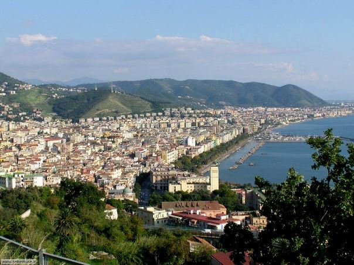

【歷史】【戰略】訪意大利有感（二）
2015-04-05 22:44:00
原文网址：https://blog.udn.com/MengyuanWang/108908714
我在前文《美國的歐洲戰略史》裡提到，在1943年初英美聯軍憑著數量、補給和海空支援上的絕對優勢，完胜隆美爾的Afrika Korps（非洲軍團）之後，丘吉爾原本希望由意大利北上，經奧地利切入中歐，在1944年底前便可撃敗納粹德國，並趕在蘇軍之前就佔領東歐。在1943年一月的卡薩布蘭卡會議中，美方由馬歇爾出面否決了這個方案，堅持要慢慢等蘇德兩軍互相殺傷，在1944年夏才在法國西北部開闢第二戰場。當時英方爭不過美方，但是現實總是會有些意外的：1943年七月初，聯軍登陸西西里，德意兩軍只做了象徵性的抵抗；原本意大利戰事應該依美國人的計劃，就此結束。但是七月底意大利居然發生了政變，墨索里尼被軟禁到一個渡假山莊里，新政府開始和英軍和談。這對丘吉爾來說，當然是天賜良機，可以藉此繞過美國人的阻撓，重拾“南方”戰略。於是他一面和意大利新政府和談、一面準備派軍進駐Rome。實際的作戰計劃是在九月初分兵兩路：助攻方向由西西里向對岸的Calabria（這個省分喜歡吃辣，海鮮尤其有名，是少數風味濃厚辛辣的歐洲菜之一）和稍為向東的Taranto進軍；主攻則是在西西里空軍基地的航程範圍內，選擇最北（亦即離Rome最近）又適合登陸的海灘進行大規模兩棲作戰。
美國人當然不願見到英軍不費吹灰之力就一舉拿下意大利，但是又找不到好藉口來阻撓這個計劃，於是只能假裝合作，從內部進行戰術性的破壞。首先是慷慨地貢獻陸海空軍力量，藉此拿下了作戰的指揮權，由美軍第五兵團司令Mark Clark（克拉克）指揮代號為Operation Avalanche的這場兩棲登陸。克拉克的第一個決定就讓此後幾代的軍事歷史學家摸不著頭腦：明明Naples的北面就是Volturno河的沖積平原，地勢平坦寬敞，是兩棲登陸的理想地點，而且剛好在戰術空軍的航程之內。一旦在此登陸，Naples便可不戰而下，盟軍將擁有Rome以南的最大港口，補給極為便利。 Naples以南，山脈直逼海岸，唯一可以勉強上岸的地方在Salerno以南。但是Salerno本身地勢狹窄，三面環山，如果德軍佔領了這些山地，不但血戰不能避免，而且還有被推下海的危險。可是克拉克就偏偏選中了後者。 
這是Amalfi Coast（即西起Sorrento，東至Salerno，50多公里的海岸線）較和緩路段的典型景觀。這裡群山直逼海岸，只要有一小片沙灘就算是和緩的了。背景遠處是第一“大城”Amalfi。

這是來自Amalfi的巴士終於走出懸崖峭壁，向東南方俯視Salerno的景觀。 Salerno三面環山，只有西南方臨海。這張照片里遠處的東南方山丘是周邊最低矮平緩的。在那些山丘的南面，才有較開闊的平原。
在1943年九月初，希特勒還覺得意大利是雞肋，不但防守的兵員不多，而且他依老習慣把前線的指揮權分給兩個元帥，由他自己在幕後遙控。如此一來，打了勝仗顯然是他的英明，打了敗仗也容易把責任賴到其中一個元帥的頭上；後來他在諾曼底也是這樣胡搞的。當時意大利北半交給隆美爾，南半則交給凱塞林（Albert Kesselring），而凱塞林只有一個師（即16th Panzer Division）能部署到Salerno正面；這還是因為克拉克一方面以保障奇襲為藉口，嚴禁攻擊前準備的轟炸和砲擊，一方面卻又讓德國人早就得到情報，知道登陸的確實時間地點，以致在搶灘時，德軍已經準備好英語的擴音廣播，叫盟軍上岸投降。盟軍方面只派了三個師來突擊56公里的正面，其中只有一個美軍師，負責最安全也是最不重要的南端。另外兩個師都是英軍的，分別負責Salerno和Salerno東南山丘的另一邊。美軍和英軍之間相距20公里，還隔了條河，完全無法互相支援。讀者應該可以想像的到，軍事歷史學家對克拉克的這個部署方案，同樣是百思不得其解。
1943年九月8日，意大利政府向盟軍投降。 1943年九月9日，英美聯軍登陸上岸。 克拉克下了嚴令，不能快速突進山區，必須步步為營，緩慢推進。盟軍的三個師本來就人手不足，接下來的四天又只有南端的美軍得到一個師的增援，沒有多久英軍已經精疲力竭，無力前進。在此同時，凱塞林果斷忽略Calabria和Taranto之敵，把所有能機動增援的四個師集結到Salerno東面，在九月13日發動了反擊，雙方血戰了三晝夜，英軍差點在Salerno被全殲，最後靠著海空轟炸勉力撃退了德軍，但是鋒銳已挫，凱塞林得以從容地依據山地部署下一道又一道的堅強防禦線，盟軍花了近兩年時間仍無法打出意大利，而且在絕對優勢的海空支援下，死傷人數居然還是達到了德軍的兩倍。這兩年的苦戰，盟軍都是由克拉克指揮的，而且奇事一樁又一樁地發生：首先在Operation Avalanche差一點就成為大災難之後，羅斯福馬上親自到意大利來頒給克拉克Distinguish Service Cross；這是美軍高級指揮官能獲得的最高獎章。 1944年，為了從後方突破凱塞林的防線，盟軍又在Anzio做了一個兩棲登陸，克拉克一樣嚴令不能快速突進山區，必須緩慢推進，結果又是被德軍包圍，陷入拉鋸戰。後來盟軍終於有機會圍殲凱塞林手下的第十兵團，克拉克卻不顧英軍統帥部的建議，把美軍掉頭開進德國人已經撤離的Rome，事後羅斯福完全不理丘吉爾的抱怨，在1945年初臨死前還要升Clark的官，讓他做到四星上將。 1946年，二戰結束後一年，美軍第36步兵師（就是在Salerno南端登陸的那個美軍師）的老兵還史無前例地向國會告狀，要求調查克拉克因“無能”而導致他們無謂的傷亡，結果也無疾而終，克拉克照樣當了兩年奧地利佔領軍司令，1947年還升任馬歇爾在國務卿任上的副手。 1952年，韓戰陷入僵局，美軍眼看著必須簽下史上第一個不是勝利的和約，結果又是克拉克忍辱負重，代替Ridgway（李奇威）來當這個窩囊的駐韓聯軍司令。 
羅斯福雖然行動不便，在Salerno登陸戰的慘劇之後，卻立刻迫不及待地趕到意大利前線為克拉克頒發獎章。
上個月我到意大利南部遊覽，第一重點固然是古城Pompeii，但是也特別從Naples到Amalfi和Salerno走了一趟，親眼看看這個戰場的地理形勢。 Operation Avalanche中，英美的特戰部隊走Amalfi Coast的山路，搶占隘口；我也就拉著不太情願的家人，跟著他們的舊路，爬了幾公里。英美盟軍在意大利受挫，致使蘇軍得以佔領歐洲的東半部，奠定了其後40多年冷戰的兩極世界和美國至今的霸權，這是震撼全球的關鍵大事。雖然知道背後真相的人必然極少，但是我既然有幸能獨立看穿真相，就在此和讀者共同緬懷這段歷史。
【後註一】寫這篇文章的時候，為求思路流暢，有些細節沒有提到。事後覺得讀者若是知道了，有助於了解全盤真相，所以在此補述。馬歇爾一直是羅斯福的心腹，軍事外交方面的總管；羅斯福死前，覺得馬歇爾不能搞內政，所以臨時選了杜魯門為副總統，外交政略由馬歇爾當國務卿繼續執行。艾森豪則是馬歇爾的副官出身，是他的心腹弟子，韓戰發生後，已因病退休的馬歇爾授命他選總統；後來他在內政外交上都有中上級的成就。克拉克又是艾森豪的副官出身，是他的心腹，忠心耿耿，但是命沒有艾森豪的好，不但沒當上總統，而且為了當白手套，留下萬世臭名；任何一本有關二戰的書都把他列為盟軍最爛的高級將領。後來連後輩李奇威（1943年他當意大利戰區司令時，李奇威只是他手下的師長，比他低了三級）不願籤的和約，都得由他出面來收拾善後，算是他對老闆艾森豪賣命到底；說來他也是委屈了。
羅斯福為了建立美國的長久霸權，讓全球多死了1000萬人，其中美國人有40幾萬，所以克拉克還不算太倒霉的。這些玩大政略的“偉人”們，一彈指就是幾百萬條人命，非常人所能體會。毛澤東也是這個“偉人俱樂部”的成員，只是大躍進和文革都是在和平時期搞的，所以和二戰時期的人命損失來比較，就更為驚人。
凱塞林當然是個不錯的將領，但是德軍英才輩出，他成大名其實運氣成分很大。 1943年九月初，德軍在意大利最精銳的兩個裝甲師被分配給了隆美爾，而隆美爾當然還是本位主義，不願把主力部隊交給別的戰區。若不是克拉克有意放水，只怕在Volturno登陸之後，凱塞林的戰線就會全面崩潰，不到一個月整個Florence以南的戰區就被完全佔領了。實際上在Salerno打出一個漂亮的反擊戰後，希特勒很高興，把隆美爾調到法國，整個意大利交給了凱塞林，並且增援了一些部隊，不但對後來的戰事有幫助，而且一個極其精銳的特戰部隊還馬上在九月底就把墨索里尼救出來，讓他多當了兩年傀儡，到1945年才被共產黨游擊隊捉住吊死。二戰後期德軍最了不起的元帥其實是Walter Model（莫德爾），他在東線屢次以1：5，甚至1：10，的兵力，打出奇蹟式的防守戰勝利，可惜世人常以成敗論英雄，而當時東線的大勢是德軍不斷地潰退。到1945年初，莫德爾被任命為西線總司令，希特勒命令他不得投降，他不願讓手下的二十多萬殘兵作無謂的犧牲，下令全面解散（技術上不算是投降），自己卻因為忠義不能兩全，自殺而死。這樣的人品，即使放到中國古代，也算是十分出色的了（當然也有可能是因為他在東線殺的俄國人太多，怕史達林不會放過他；但是即使如此，他還是比Goring之輩高尚多了）。凱塞林則一直和克拉克耗到二戰結束才投降；英軍統帥部趕緊把他依戰犯罪起訴；其實在意大利戰區，美軍濫殺戰俘的事，比德軍幹的還多得多了，這個罪狀純屬出氣報復。還好已經選舉失敗、卸任首相的丘吉爾聽說之後，為凱塞林說情，他才被釋放出來。丘吉爾當然知道英軍在意大利失利，是被羅斯福和克拉克耍了；他到底還是有品的，不願遷怒無辜。
到了1946年，丘吉爾給了一個演說，強調東歐已經陷入“鐵幕”（“Iron Curtain”），此後這個詞彙在冷戰時期的反共集團裡流行了40多年。其實丘吉爾的用意是在羅斯福已死的背景下，挑撥美蘇矛盾，以求歐洲最終（從美蘇兩邊，而不是單從蘇聯）的解放。可惜在核彈時期，熱戰打不起來；冷戰一直拖了兩代才結束，而丘吉爾在1955年就死了。想來他回顧被羅斯福玩弄於股掌之上的那六年，必然是有些怨恨遺憾的。
5 条留言
这么看来，当年日本偷袭珍珠港，一直有一种说法美军和政府高层实已知道，却任其发生，以激起国内民愤，用以扭转国会“孤立主义”当道的态势确实有可能是罗斯福的又一谋略，代价又是几千条人命。
但是以美国在1941年中开始对日本灼灼逼人，半年内就下了最后通牒的歷史背景，如果罗斯福还不预期日本会偷袭反击，那么他就真是无能、愚蠢至极。偏偏他的其他作为，证明他是20世纪人类最伟大、最成功的政治人物，没有之一。